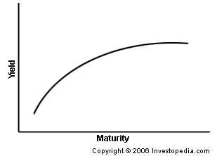

A line that plots the interest rates, at a set point in time, of bonds having equal credit quality, but differing maturity dates. The most frequently reported yield curve compares the three-month, two-year, five-year and 30-year U.S. Treasury debt. This yield curve is used as a benchmark for other debt in the market, such as mortgage rates or bank lending rates. The curve is also used to predict changes in economic output and growth.
The shape of the yield curve is closely scrutinized because it helps to give an idea of future interest rate change and economic activity. There are three main types of yield curve shapes: normal, inverted and flat (or humped). A normal yield curve (pictured here) is one in which longer maturity bonds have a higher yield compared to shorter-term bonds due to the risks associated with time. An inverted yield curve is one in which the shorter-term yields are higher than the longer-term yields, which can be a sign of upcoming recession. A flat (or humped) yield curve is one in which the shorter- and longer-term yields are very close to each other, which is also a predictor of an economic transition. The slope of the yield curve is also seen as important: the greater the slope, the greater the gap between short- and long-term rates.
{kind=link}